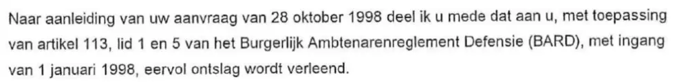

Preuve · Lettre
Ministère de la Défense à Barbara Overduyn, démission honorable, 3 novembre 1998
Le passage
« Comme suite à votre demande du 28 octobre 1998, je vous informe qu’en application de l’article 113, paragraphes 1 et 5, du Règlement des fonctionnaires civils de la Défense (BARD), une démission honorable vous est accordée avec effet au 1er janvier 1998. » Page 1, le paragraphe décisif de la lettre. Traduit du néerlandais ; le texte original figure ci-dessous.
Texte original
“Naar aanleiding van uw aanvraag van 28 oktober 1998 deel ik u mede dat aan u, met toepassing van artikel 113, lid 1 en 5 van het Burgerlijk Ambtenarenreglement Defensie (BARD), met ingang van 1 januari 1998, eervol ontslag wordt verleend.” Les lignes de la numérisation sont ici réunies.

Pourquoi ce document compte
La section des voix cite cette lettre en raison des dates qu’elle contient. Barbara Overduyn, l’employée du renseignement militaire qui travaillait chez Casema en même temps que Giltay à l’été 1998, s’est vu accorder une démission honorable du ministère de la Défense avec effet au 1er janvier 1998, si bien que, sur le papier, elle était déjà partie des mois avant cet été-là. La décision elle-même n’a été prise que le 3 novembre 1998, après sa propre demande du 28 octobre : une démission avec effet rétroactif de plus de dix mois.
Provenance
- Document
- Lettre accordant une démission honorable
- Expéditeur
- Ministère de la Défense, service de renseignement militaire (Militaire Inlichtingendienst, MID), Postbus 20701, La Haye
- Signé
- Pour le secrétaire d’État à la Défense, par le chef du MID, le commodore H.J. Vandeweijer. La signature elle-même est caviardée dans le PDF publié
- Délégation de signature
- La décision vaut décision du secrétaire d’État à la Défense, Henk van Hoof, qui en porte la responsabilité (article 10:2 de l’Awb, la loi générale néerlandaise sur le droit administratif). La citation dans la section des voix lui est donc attribuée
- Destinataire
- Mme B.V. Overduyn, La Haye
- Date
- 3 novembre 1998
- Référence
- 980230/0749
- Objet
- Eervol ontslag (démission honorable)
- Références
- La demande présentée par Overduyn elle-même le 28 octobre 1998 ; article 113, paragraphes 1 et 5, du Burgerlijk Ambtenarenreglement Defensie (BARD), le Règlement des fonctionnaires civils de la Défense
- Date d’effet
- 1er janvier 1998
- Voie de recours
- Réclamation auprès du signataire dans un délai de six semaines à compter de la notification
- Langue
- Néerlandais
- Pages
- 1
Cité dans : la section des voix.
Fiche de preuve : https://
Document : https://
Dernière modification le 13 septembre 2026, consulté le 3 octobre 2026.

Cette page est une fiche de preuve du livre Le Général de dissimulation d’Edwin Giltay et du site web qui l’accompagne.